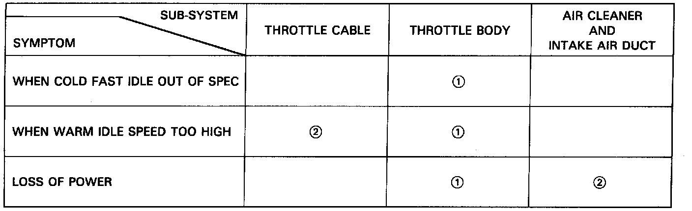

Intake Air System Troubleshooting Guide
Intake Air System Troubleshooting Guide:

NOTE: Across each row in the chart, the sub-systems that could be sources of a symptom are ranked in the order they should be inspected starting with 1. Find the symptom in the left column, read across to the most likely source, then refer to the page listed at the top of that column. If inspection shows the system is OK, try the next system 2, etc.